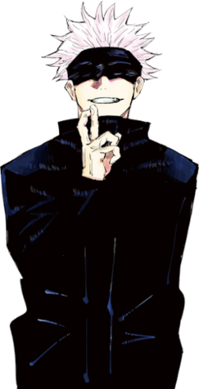
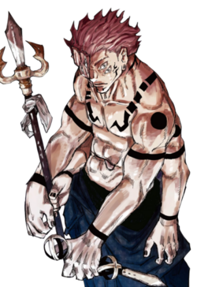
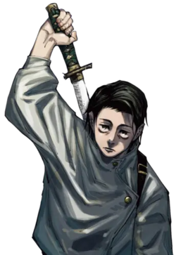

“Todos nós sabemos que o Sukuna é o mais forte né”Lucas fã do Sukuna
Os feiticeiros mais fortes
Satoro Gojo
Ryomen Sukuna
Yuta Okkotsu
Comunidade
“Lucas vc sabe que o Gojo perdeu pq o autor teve dó do Sukuna, ele é fraco LOL”João Pereira fã do Gojo